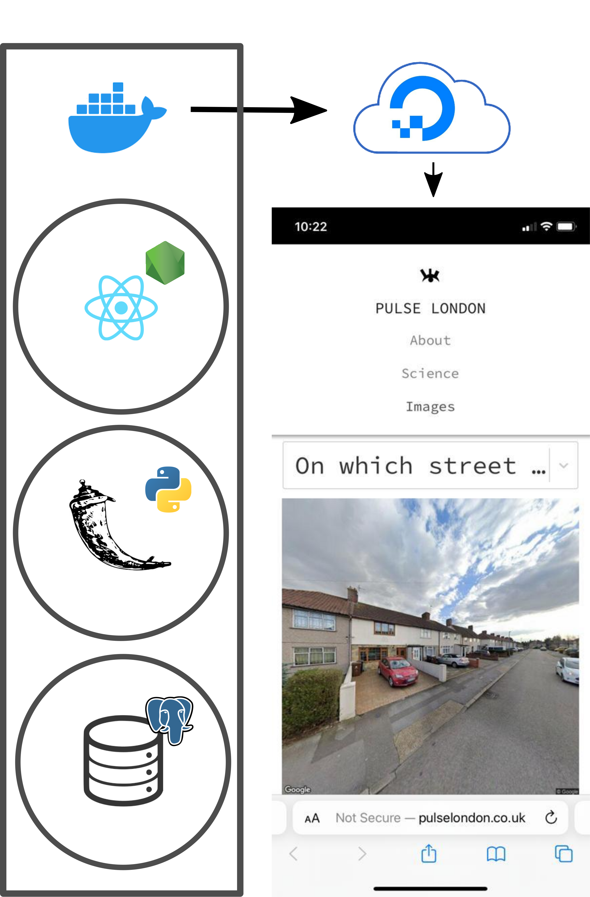

Creating and Deploying a Web-App
In this section, we will go through the necessary steps for creating a web-application using React front-end and Flask back-end. Our database of images and perception rating will be hosted in postgres. After which, we will deploy the entire app using Digital Ocean Droplet and Kubernetes services.

Web-App with Postgres Database using Flask + React
In this example, we will create a web app which displays two images side by side and the user is asked to select one, adding their rating to the database. For more detailed instructions follow this blog.
Summary I
- Postgres Database
- Flask back-end
- React front-end
Requirements I
| Program | Version |
|---|---|
| Python | >= 3.7 |
| Postgresql | >= 11.17 |
| Node.js and npm | >= 16.13.2 |
- API key from Google Console.
Postgres DB
Create DB example as user postgres:
psql postgres
postgres=# CREATE DATABASE example;
From web_app/sql/ dump ready-made data, ratings and images, into the postgres database example:
web-app/sql$ psql -U postgres example < ratings
web-app/sql$ psql -U postgres example < images
Flask Back-end
Set environmental variables:
export app_host='localhost'
export db='example'
export db_user='postgres'
export db_host='localhost'
export db_port=5432
run:
web-app/back_end$ python app.py
React Front-end
Set environmental variables in the new file web-app/front_end/.env:
REACT_APP_BACK_END_HOST ='localhost'
REACT_APP_BACK_END_PORT = '5000'
REACT_APP_API_KEY = 'API_KEY_from_GOOGLE_STREET_VIEW_API'
Using an api key from Google Console.
run:
web-app/front_end$ npm install
run:
web-app/front_end$ npm start
Deployment using DigitalOcean Droplet and Kubernetes Cluster
In this section we will go through the steps needed to deploy your application using Digital Ocean cloud infrastructure.
Summary II
- Moving database to Droplet
- Dockerise front-end and back-end
- Deployment using Kubernetes
Requirements II
| Program | Version |
|---|---|
| Python | >= 3.7 |
| Postgresql | >= 11.17 |
| Node.js | >= 16.13.2 |
| Docker | >= 20.10.18 |
| kubectl | ==v1.20.2 |
- A web domain.
- DockerHub credentials
- DigitalOcean, Droplet + Kubernetes Cluster
Moving database to Droplet
Once you have created a Droplet, configured your root password and created a new user, your droplet IP address will show. You can ssh into your droplet from your local machine:
ssh user@IP.address
In your Droplet, install postgres and postgres-client (below). Create example database:
sudo apt-get install postgresql-client
psql postgres
postgres=# CREATE DATABASE example;
\q
We'll now copy the local file, into_droplet, to the remote Droplet using sftp.
urban_perceptions/web_app/sql$ sftp user@IP.address
sftp> put into_droplet
sftp? Ctrl + D
If you ls in the directory, you will see the file into_droplet has copied over to your Digital Ocean Droplet. ssh back into your droplet and pg_dump the into_droplet file into your example database:
ssh user@IP.address
droplet$ psql example < into_droplet
droplet$ psql -d example
example=# \dn+
You should see a list of schemas in the database.
Dockerise front-end and back-end
In this section we will dockerise our front-ends and back-ends.
npm run-script build
docker build --no-cache --pull --force-rm -t front-end-example .
Inspect docker images using 'docker images', you should now see front-end-example as the latest image. Run the image using:
docker run -it -p 4000:80 front-end-example:latest
This should launch the React app at the localhost:4000. We'll now push the docker image to DockerHub. Get the image tag from 'docker images' and tag it:
docker tag [IMAGEID] username/example-front-end
docker push username/example-front-end
If you visit DockerHub, you should now see the image available on the server. Let's follow similar steps for the back-end. Within the back-end dir enter:
docker build --no-cache --pull --force-rm -t back-end-example .
Once this is complete run the image:
docker run -it --network="host" --env db_host='localhost' --env db_port=5432 --env db_root_password='[POSTGRES_PASSWORD]' back-end:latest /bin/bash
This will require you to update your local postgres settings so listen to on all addresses. Continue to push the docker image to DockerHub as with front-end.
Deployment with Kubernetes
Deploy database
Once you have your DigitalOcean Kubernetes cluster and kubectl command line tool, we will begin by connecting the cluster to our external postgres db. To do so run:
sudo kubectl apply -f sql/db.yaml
where PRIVATE_IP_DROPLET in the db.yaml file is configured to your digital ocean droplet private IP address. Once this is configured, run:
sudo kubectl describe services --namespace postgres
to get the IP address of the postgres endpoint. We will need this to configure postgres on the droplet to listen to and to connect to the postgres DB from the back-end.
Configuring postgres settings
We will have to configure remote access to postgres in the Droplet by changing some configuration files.
First change the listening address to listen_addresses = '*':
vim /etc/postgresql/13/main/postgresql.conf
Then, add the postgres endpoint IP to the postgres config file:
vim /etc/postgresql/13/main/pg_hba.conf
adding under IPV4 addresses the following:
host all all [POSTGRES_ENDPOINT_IP]/24 md5
If there are any issues with the password, then these can be amended by changing md5 to trust.
Deploying back-end
Now that we have configured out postgres endpoint from the cluster to the droplet, we will deploy the backend. In back_end/back-end.yml configure username/BACK_END_CONTAINER, POSTGRES_ENDPOINT_IP, POSTGRES_USER_PASSWORD. Once that is complete run:
sudo kubectl apply -f back-end.yml
This will create a back-end deployment, and a back-end service. The back-end service IP will be needed for the front-end to request from. Make a note of the external IP by running:
sudo kubectl get svc
Route DNS
Configure your DNS registrar to point to Digital Ocean from the site where you purchased your web domain.
Deploy front-end
In front_end/front-end-ingress.yml configure WEB_DOMAIN and username/FRONT_END_CONTAINER. Then run:
sudo kubectl apply -f front-end-ingress.yml
Expose the front-end deployment to a LoadBalancer (which we will use in the next step to route IP):
sudo kubectl expose deployment front-end --type=LoadBalancer --name=[name-of-load-balancer]
Get the external IP address of the LoadBalancer using
sudo kubectl get svc
Create a new A type DNS record in Digital Ocean that is linked to the LoadBalancer's external IP address.
Finally, create a configmap which will host environmental variables for the React App.
kubectl create configmap front-end-config --from-file=config.js=dev.properties --dry-run -o yaml \
| kubectl apply -f -